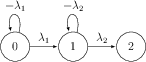
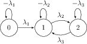

Markov chains in continuous times : Exercises
Introduction
The problems below all involve models that are constructed using the theory of Markov chains in continuous time. One of the central results in this theory is the Kolmogorov equation: $$ \frac{\textrm{d}P(t)}{\textrm{d}t} = \mathbf{P}(t) \mathbf{Q} $$Example problems
Click on the problems to reveal the solution
Problem 1
The transition graph for this process has three states as shown in the graph below:

The corresponding jump rate matrix is:
$$
\mathbf{Q} = \left(
\begin{matrix}
-\lambda_1 & \lambda_2 & 0 \\
0 & -\lambda_2 & \lambda_2 \\
0 & 0 & 0
\end{matrix}
\right)
$$
When this jump rate matrix is inserted into the Kolmogorov forward equation $\frac{\textrm{d}\mathbf{P}(t)}{\textrm{d}t} = \mathbf{P(t)}\mathbf{Q}$
we get:
$$
\left(
\begin{matrix}
\textrm{d}P_{00}/\textrm{d}t & \textrm{d}P_{01}/\textrm{d}t & \textrm{d}P_{02}/\textrm{d}t \\
\textrm{d}P_{10}/\textrm{d}t & \textrm{d}P_{11}/\textrm{d}t & \textrm{d}P_{12}/\textrm{d}t \\
\textrm{d}P_{20}/\textrm{d}t & \textrm{d}P_{21}/\textrm{d}t & \textrm{d}P_{22}/\textrm{d}t \\
\end{matrix}
\right) =
\left(
\begin{matrix}
P_{00} & P_{01} & P_{02} \\
P_{10} & P_{11} & P_{12} \\
P_{20} & P_{21} & P_{22}
\end{matrix}
\right)
\left(
\begin{matrix}
-\lambda_1 & \lambda_1 & 0 \\
0 & -\lambda_2 & \lambda_2 \\
0 & 0 & 0
\end{matrix}
\right)
$$
When the above matrix equation is multiplied out we get to the following three differential equations:
$$
\begin{aligned}
\frac{\textrm{d}P_{00}}{\textrm{d}t} & = -\lambda_1 P_{00} \\
\frac{\textrm{d}P_{01}}{\textrm{d}t} & = \lambda_1 P_{00} - \lambda_2 P_{01} \\
\frac{\textrm{d}P_{02}}{\textrm{d}t} & = \lambda_2 P_{01} \\
\end{aligned}
$$
The solution to the first of these differential equations can be calculated as follows:
$$
\begin{aligned}
\frac{\textrm{d}P_{00}}{\textrm{d}t} & = -\lambda_1 P_{00} \\
\int_{P_{00}(0)}^{P_{00}(t)} \frac{\textrm{d}P_{00}}{P_{00}} & = - \int_0^t
\lambda_1 \textrm{d}t \\
\ln[ P_{00}(t) ] - \ln[ P_{00}(0) ] & = -\lambda_1 t \\
\rightarrow \qquad P_{00}(t) & = e^{-\lambda_1 t}
\end{aligned}
$$
The solution to the second can be calculated using the method of integrating factors:
$$
\begin{aligned}
\frac{\textrm{d}P_{01}}{\textrm{d}t} + \lambda_2 P_{01} & = \lambda_1
P_{00} \\
\rightarrow \qquad e^{-\lambda_2 t} \frac{\textrm{d} }{\textrm{d} t} \left[
e^{\lambda_2 t} P_{01} \right] & = \lambda_1 e^{-\lambda_1 t} \\
\rightarrow \qquad \int \textrm{d}\left[ e^{\lambda_2 t} P_{01} \right] & =
\int_0^t \lambda_1 e^{(\lambda_2-\lambda_1)t'} \textrm{d}t' \\
\rightarrow \qquad e^{\lambda_2 t} P_{01}(t) &= \frac{\lambda_1}{\lambda_2
- \lambda_1} e^{(\lambda_2-\lambda_1)t} - \frac{ \lambda_1 }{ \lambda_2 -
\lambda_1} \\
\rightarrow \qquad P_{01}(t) & = \frac{\lambda_1}{\lambda_2 - \lambda_1} \left(
e^{-\lambda_1 t} - e^{-\lambda_2 t} \right)
\end{aligned}
$$
To get to the final result required we first need to recognise that the time to arrive in state 1 is an exponentially distributed random variable.
The expectated time to transition from state 1 to state 2 is thus $\frac{1}{\lambda_1}$. The second thing we need to recognise is that the
amount of time taken it takes to get to state one does not affect the amount of time it takes to transition from state 2 to 3. The time taken to
transition from state 2 to 3 is also exponentially distributed so the expectation is $\frac{1}{\lambda_2}$. As the two processes are independent
the total expected time is thus $\frac{1}{\lambda_1} + \frac{1}{\lambda_2}$
Problem 2
The transition graph is now:

The jump rate matrix for this process is:
$$
\mathbf{Q} = \left(
\begin{matrix}
-\lambda_1 & \lambda_2 & 0 \\
0 & -\lambda_2 & \lambda_2 \\
0 & \lambda_3 & -\lambda_3
\end{matrix}
\right)
$$
This process now has an has an equilibrium that it settles down to in the long time limit which we can calculate as follows:
$$
\left(
\begin{matrix}
\pi_0 & \pi_1 & \pi_2
\end{matrix}
\right)
\left(
\begin{matrix}
-\lambda_1 & \lambda_1 & 0 \\
0 & -\lambda_2 & \lambda_2 \\
0 & \lambda_3 & -\lambda_3
\end{matrix}
\right) =
\left(
\begin{matrix}
0 & 0 & 0
\end{matrix}
\right)
$$
Multiplying out these matrices gives
$$
\begin{aligned}
-\lambda_1 \pi_0 & = 0 \qquad \rightarrow \qquad \pi_0 = 0 \\
\lambda_1 \pi_0 - \lambda_2 \pi_1 + \lambda_3 \pi_2 & = 0 \qquad \rightarrow
\qquad \pi_2 = \frac{\lambda_2}{\lambda_3} \pi_1
\end{aligned}
$$
We can solve these equations by recalling that $\pi$ is a vector of proabilities and that
as such it must be normalised
\begin{equation}
\pi_0 + \pi_1 + \pi_2 = 1 \qquad \rightarrow \qquad \frac{\lambda_2}{\lambda_3}
\pi_1 + \pi_1 = 1 \qquad \rightarrow \qquad \pi_1 = \frac{\lambda_3}{\lambda_2
+ \lambda_3}
\nonumber
\end{equation}
Problem 3
The transition graph for this problem and the jump rate matrix are identical to those for problem 1. Taking the solutions from that problem
we can thus write that at time $t$ the probability that a randomly selected atom is Actinium-220 is given by:
\[
P_{00}(t) = e^{-\lambda_1 t}
\]
The probability that a randomly selected atom is Francium-216 is:
\[
P_{01}(t) = \frac{\lambda_1}{\lambda_2 - \lambda_1} \left( e^{-\lambda_1 t} - e^{-\lambda_2 t} \right)
\]
and the probability that a randomly selected atom is Astatine-212 is:
\[
P_{02}(t) = 1 - P_{00}(t) - P_{01}(t) = 1 - e^{-\lambda_1 t} -
\frac{\lambda_1}{\lambda_2 - \lambda_1} \left(
e^{-\lambda_1 t} - e^{-\lambda_2 t} \right)
\]
Notice that we do not need to solve a differential equation to get the result above as we know that $P_{00}(t) + P_{01}(t) + P_{02}(t) = 1$.
We can use these three probabilities to calculate the total mass of the sample at time $t$ by calculating the expected mass and multiplying it by the number of atoms that are present in the sample, which will not change. Only the types of atoms that are present will change: \[ \begin{aligned} \mathbb{E}[M(t)] = & N( 220 P_{00}(t) + 216 P_{01}(t) + 212 P_{02}(t) ) \\ = & N \left[ 220 e^{-\lambda_1 t} + 216 \frac{\lambda_1}{\lambda_2 - \lambda_1} \left( e^{-\lambda_1 t} - e^{-\lambda_2 t} \right) + 212\left( 1 - e^{-\lambda_1 t} - \frac{\lambda_1}{\lambda_2 - \lambda_1} \left( e^{-\lambda_1 t} - e^{-\lambda_2 t} \right) \right) \right] \\ =& N\left[ 212 + 8e^{-\lambda_1 t} + 4 \frac{\lambda_1}{\lambda_2 - \lambda_1} \left( e^{-\lambda_1 t} - e^{-\lambda_2 t} \right) \right] \end{aligned} \]
We can use these three probabilities to calculate the total mass of the sample at time $t$ by calculating the expected mass and multiplying it by the number of atoms that are present in the sample, which will not change. Only the types of atoms that are present will change: \[ \begin{aligned} \mathbb{E}[M(t)] = & N( 220 P_{00}(t) + 216 P_{01}(t) + 212 P_{02}(t) ) \\ = & N \left[ 220 e^{-\lambda_1 t} + 216 \frac{\lambda_1}{\lambda_2 - \lambda_1} \left( e^{-\lambda_1 t} - e^{-\lambda_2 t} \right) + 212\left( 1 - e^{-\lambda_1 t} - \frac{\lambda_1}{\lambda_2 - \lambda_1} \left( e^{-\lambda_1 t} - e^{-\lambda_2 t} \right) \right) \right] \\ =& N\left[ 212 + 8e^{-\lambda_1 t} + 4 \frac{\lambda_1}{\lambda_2 - \lambda_1} \left( e^{-\lambda_1 t} - e^{-\lambda_2 t} \right) \right] \end{aligned} \]
Contact Details
School of Mathematics and Physics,
Queen's University Belfast,
Belfast,
BT7 1NN
Email: g.tribello@qub.ac.uk
Website: mywebsite